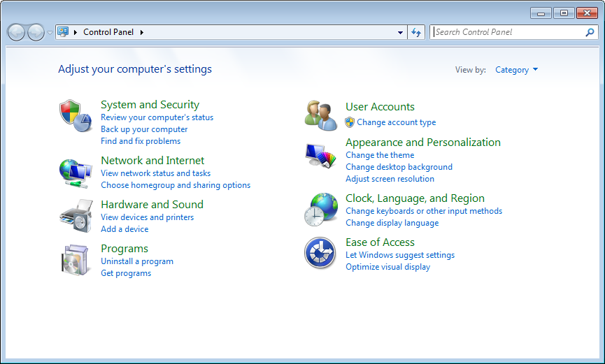
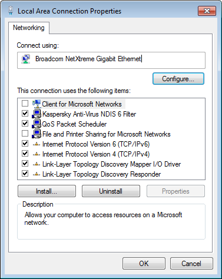
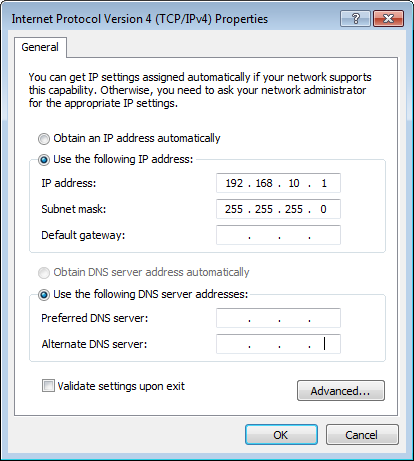
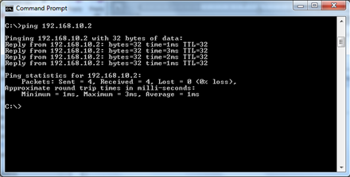
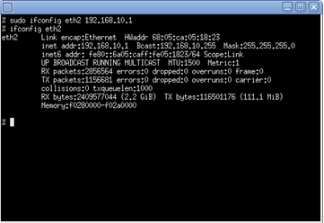
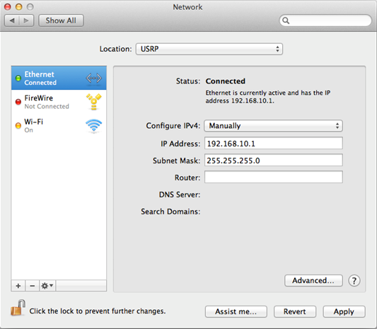
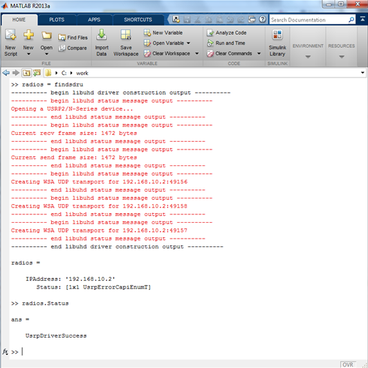

Setup and Configuration
Install Support Package for USRP® Radio Software
Download the Communications System Toolbox Support Package for USRP® Radio
software using the Support Package Installer function. Enter help
targetinstaller at the MATLAB prompt for more information.
Back to Top
Configure Host Computer
Establishing Connectivity
This section describes how you must configure the host computer
to communicate with the USRP® hardware. Note the following:
You must have a dedicated gigabit Ethernet card for
the USRP® hardware.
If you also want simultaneous Internet access, your
host computer requires a second Ethernet card.
Connect your USRP® radio to the Ethernet card
on your host computer directly with an Ethernet cable.
USRP® radios have a default IP address of 192.168.10.2.
Note
Some Ethernet cards may not be able to support high data throughput.
You may encounter such cases if you set the decimation/interpolation
rate of your USRP® device to a low value, for example, 4. Intel® chipsets
provide high quality connection in such cases. |
Configuring Windows®
Windows® 7 Setup. Configure the Ethernet card for your USRP® hardware by
performing the following Windows® task workflow.
Select Control Panel from the Windows icon
in the lower left corner of your monitor.
In the upper right-hand corner, make sure View by is
set to Category.
Select Network and Internet.

Select Network and Sharing Center.

Select Change adapter settings on
the left sidebar.

Single NIC Workflow
If you are have only one NIC to connect to the USRP® device,
follow these steps. If you have a dedicated NIC for the USRP® device,
go to the next step.
If you have only one NIC, try connecting wirelessly
to the existing local area network, thereby freeing the NIC to be
used by the USRP® device.
Right click on the local area network connection that
is connected to the USRP® device to get the popup menu. Select Properties.

Select the local area connection that you plan to
use for the USRP® device. Continue on to the next step.
Dedicated NIC Workflow
Right click on the local area network connection that
is connected to the USRP® device to get the popup menu. Select Properties.
If an unused NIC is available, the local area connection will be displayed
as "Unidentified network".
Continue on to the next step.
On the Networking tab of the
dialog, deselect options Clients for Microsoft Networks and File
and Printer Sharing for Microsoft Networks. These services
may cause intermittent connection problems with the USRP® radio
in some cases.

Double-click Internet Protocol Version 4
(TCP/IPv4).

On the General tab, select Use
the following IP Address.
Set host IP Address to 192.168.10.X,
where X is any number from 1 to 255 except 2.
If your USRP® radio is on another subnet (the first three
octets of the IP address field are not 192.168.10),
then the IP address that you enter here should have the same subnet
number. See Check Subnet Values on Host and Radio.
Leave the subnet mask set to default (255.255.255.0).
Click OK to finish.
Check Windows—Radio Connection. Check if the host computer can communicate with the USRP® radio
through the Ethernet port using the ping command.
Open a command window using one of these methods:
Try to contact the USRP® radio using the ping
command with IP address of the radio.
C:\>ping 192.168.10.2
If your USRP® radio has different IP address, use that
IP address.
If you get a response similar to the one shown in
following image, then your connection is successful and you can go
to the next step, Verify MATLAB Connection to USRP® Radio.

If you get the message "Request timed out", see Check Ethernet Configuration.
Configuring Linux®
Linux® Setup. Set the host Ethernet interface with a static IP address to
enable communication with the board.
Set the correct host IP address (USRP® radios
have a default IP address of 192.168.10.2). Leave the subnet mask
set to default (255.255.255.0).
If your USRP® radio's IP address is the default value
of 192.168.10.2, run the following shell command to set these:
%sudo ifconfig ethX 192.168.10.Y netmask 255.255.255.0
Where ethX is the name of the host
Ethernet port (usually eth0, eth1,
etc.) and Y is any integer between 0 and
255 except 2. You may be required to enter a password to use the sudo command.
If your USRP® radio is on another subnet (the first three
octets of the IP address field are not 192.168.10),
then the IP address that you enter here should have the same subnet
number. See Check Subnet Values on Host and Radio.
Enter the following command in the shell to check
that the changes took effect:
%ifconfig ethX
Where ethX is the name of the host
Ethernet port (usually eth0, eth1,
etc.).

Check Linux—Radio Connection. Check the connection with the ping command the IP address of
theUSRP® radio.
Open a shell and type the following command:
%ping 192.168.10.2
If your USRP® radio is on different subnet, use that
IP address.
If you get a response similar to the one shown in
following image, then your connection is successful and you can go
to the next step, Verify MATLAB Connection to USRP® Radio.

If you get the message "Request timed out", see Check Ethernet Configuration.
Configuring Mac OS
Configure the Ethernet card for your USRP® hardware by
performing the following Windows task workflow.
Select System Preferences from the Apple icon
in the upper left corner of your monitor.

Select Network.
From the left column, select the network connection
that is connected to the USRP® device.
If you have more than one NIC (Network Identification
Card), you will select the local area connection that you plan to
use for the USRP® device. Follow the steps described in Dedicated NIC Workflow.
If you have only one NIC and normally you use that
NIC to connect to the Internet, you will have to configure that NIC
for USRP® radio (this means disconnecting your Internet connection.
If you are able to make a wireless connection to the existing local
area network, you can still maintain an Internet connection). Follow
the steps described in Single NIC Workflow.
Single NIC Workflow.
Select the Ethernet connection from the left-hand
side menu.
From the Location drop-down menu, select Edit
locations. Add a new location by clicking on the "+"
sign. Name the new location as "USRP". Then click Done.

Select Manually for Configure
IPv4 option.
Set IP Address to 192.168.10.X,
where X is any number from 1 to 255 except 2.
If your USRP® radio is on another subnet (the first three
octets of the IP address field are not 192.168.10),
then the IP address that you enter here should have the same subnet
number. See Check Subnet Values on Host and Radio.
Set the Subnet Mask to 255.255.255.0.
You can ignore Router. Click Apply.
You should see a window similar to the following image.

You have completed the setup for a single NIC. Next,
go to Check MAC OS – Radio Connection.
Dedicated NIC Workflow.
Select the Ethernet port you connected your USRP® radio
from the left-hand side menu. In this example, it is Ethernet 2.
Select Manually for Configure
IPv4 option.
Set IP Address to 192.168.10.X,
where X is any number from 1 to 255 except 2.
If your USRP® radio is on another subnet (the first three
octets of the IP address field are not 192.168.10),
then the IP address that you enter here should have the same subnet
number. See Check Subnet Values on Host and Radio.
Set Subnet Mask to 255.255.255.0.
You can ignore Router. Click Apply.
You should see a window similar to the following image.

You have completed the setup for a dedicated NIC.
Next, go to Check MAC OS – Radio Connection.
Check MAC OS – Radio Connection. Check if the host computer can communicate with the USRP® radio
through the Ethernet port using the ping command.
Open a terminal window:
Click Finder at the lower left
corner of the screen
Click Applications on the left-hand
side menu. Find Utilities on the main window
and expand it. Right click on Terminal in the
expanded list and select Open.
Try to contact the USRP® radio using the ping
command with IP address of the radio.
% ping 192.168.10.2
If your USRP® radio has another IP address, use that
IP address instead.
If you get a response similar to the one shown in
following image, then your connection is successful and you can go
to the next step, Verify MATLAB Connection to USRP® Radio
If you get the message "Request timed out", see Check Ethernet Configuration.
Back to Top
Check Ethernet Configuration
Check that the USRP® radio is powered on.
Check that the Ethernet cable is plugged into the
host computer and the Ethernet LED(s) are on.
Check that the Ethernet cable is plugged into the USRP® radio
and the Ethernet LED(s) are on.
If you have multiple Ethernet ports on your host computer,
check that the USRP® radio is connected to the desired Ethernet
port.
Check that the TCP/IPv4 properties of the host Ethernet
connection are as shown in Configure Host Computer.
Check that the subnet value of the host and the USRP® radio
are the same.
This means that the subnet value (the first three octets of
the IP address, for example, 192.168.10) of the host and the USRP®
radio should have the same value. See Check Subnet Values on Host and Radio.
Back to Top
Check Subnet Values on Host and Radio
Windows
The broadcast address on the LAN you connected your radio is
the address with 255 as the final number. For example, if your address
is 192.168.10.1, the broadcast address for the network will be 192.168.10.255.
Refer to Configure Host Computer to
find out the address of your host computer.
Use the ping command to discover all devices connected to this
port:
ping 192.168.10.255
In some systems, you may need to add a -b option: ping
-b 192.168.10.255. The system output you see may look similar
to the following graphic:

Linux
Run ifconfig in a Linux shell.
Find the IP configuration of the Ethernet port you connected your
radio.
Alternatively, run ifconfig ethx,
where eth is the Ethernet port and x is
a number 0,1,2, etc.
Note the broadcast address for this port, which is
listed as Bcast:192.168.10.255.
Use the ping command to discover all devices connected
to this port:
ping -b 192.168.10.255
The system output you see make look similar to the following
graphic:

Back to Top
Verify MATLAB Connection to USRP® Radio
After configuring and verifying the communication between the
host and the USRP® radio through the Ethernet port, verify
that MATLAB® can communicate with the USRP® Radio.
Start MATLAB.
In the shortcuts tab, click Add SDRu.

In the MATLAB command window, type the following:
radios = findsdru
The variable, radios, is a structure that
contains information on the USRP® radios connected to the host
computer.
Press Enter. MATLAB displays a message
similar to the following.

In this example, the USRP® IP address is 192.168.10.2
and its status is USRPDriverSuccess. The successful
status indicates that MATLAB can communicate with the USRP® radio
and the radio is ready to be used.
Note
The displayed screen includes messages from the UHDTM driver,
delimited by --- begin libuhd driver construction output
--- and --- end libuhd driver construction output
--- or --- begin libuhd status message output --- and ---
end libuhd status message output ---. These messages are
usually benign, but in some cases they may refer to steps that you
can take to increase the performance of the USRP® radio connection.
Follow the recommended steps when suitable. You can also refer to
the Troubleshooting section of this document. |
If radios returns an empty IPAddress field
or a status other than UsrpDriverSucess, refer
to the Troubleshooting guide.
Back to Top
Add Communications System Toolbox Support Package for USRP® Radio
Start MATLAB.
In the shortcuts tab, click Add SDRu.
This shortcut adds the Support Package for USRP® Radio
software to your path and runs the setupsdru function.
Enter help sdru to access links
for documentation (including this Getting Started Guide), examples,
and block and System objectTM help.
Create a Launch Script
You must invoke setupsdru every time you
start MATLAB. As an alternative to clicking Add SDRu each
time you start MATLAB, you can add the contents of the SDRu shortcut
to your startup script for MATLAB. This script will configure
the Support Package for USRP® Radio automatically every time
you start MATLAB.
To update your startup script, follow these steps:
In the MATLAB command window, enter the following:
edit startup
This opens the startup script in the MATLAB editor.
Note
If you do not have a startup script, see the MATLAB documentation
for the section "Specifying Startup Options in the MATLAB Startup
File". |
Add the following lines to the startup script:
Save startup.m and close.
Back to Top
 | Setup and Configuration | | USRP® Radio Support Package Firmware Update |  |
© 1984-2013 The MathWorks, Inc.
• Terms of Use • Patents • Trademarks • Acknowledgments